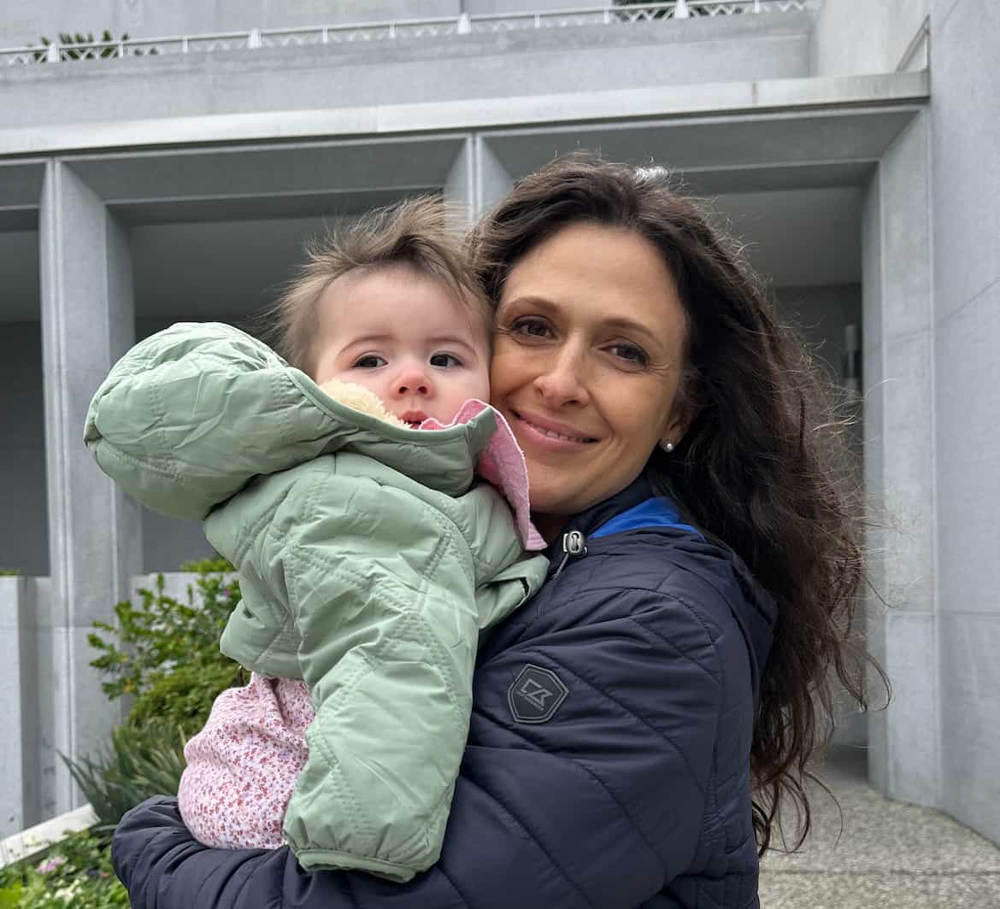

Mary Smith
About Me

I'm Mary Smith. I was born Mary Jones. My parent later added the middle name of "Sunshine." As a mother and grandmother, my posterity are my sunshine! My husband and I currently live in Sunnyvale, CA. I work as a backend software engineer at Intuit. I am interested in creating an app to help children born with anomia. I love studying the scriptures, and I love my country, the United States of America.
United States of America
The miraculous founding of the United States of America was witnessed by the ancient prophet, Nephi, in a vision. The Lord decreed this land to be a land of freedom for the righteous. In fact, the system of self-government set up by the Lord to protect our freedom, depends on the righteousness of the people of the land. This freedom prepared the way for the restoration of the true gospel of Jesus Christ. I feel tremendously blessed to lived here, but I understand my responsibility to preserve righteousness and freedom.